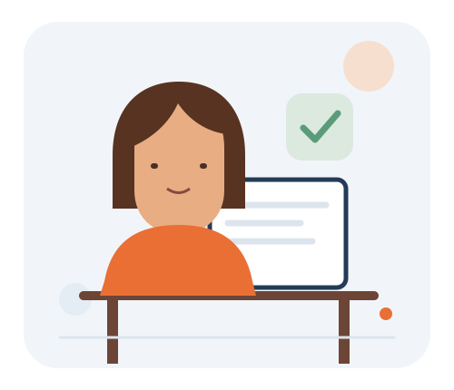

PAINEL DO CANDIDATO
Explorar vagasOlá, candidato.
Seu próximo passo profissional pode começar com uma oportunidade.

Acompanhe suas inscrições e fique por dentro das atualizações das empresas.
O que você deseja fazer?
Acesse rapidamente as principais ferramentas.
Minhas candidaturas
Veja o andamento das suas inscrições.
Carregando suas candidaturas...
Informações da conta
Dados cadastrados no ConectaTrabalho.
Nome—
E-mail—
TelefoneNão informado
Cidade—
Dicas para se destacar
Pequenos cuidados ajudam na busca por uma oportunidade.
Mantenha seus dados atualizados
Confira se seu e-mail e telefone estão corretos para facilitar o contato das empresas.
Leia os requisitos da vaga
Veja as atividades, modalidade e tipo de contrato antes de enviar sua candidatura.
Acompanhe suas inscrições
Volte ao painel para verificar se a empresa atualizou a situação da candidatura.